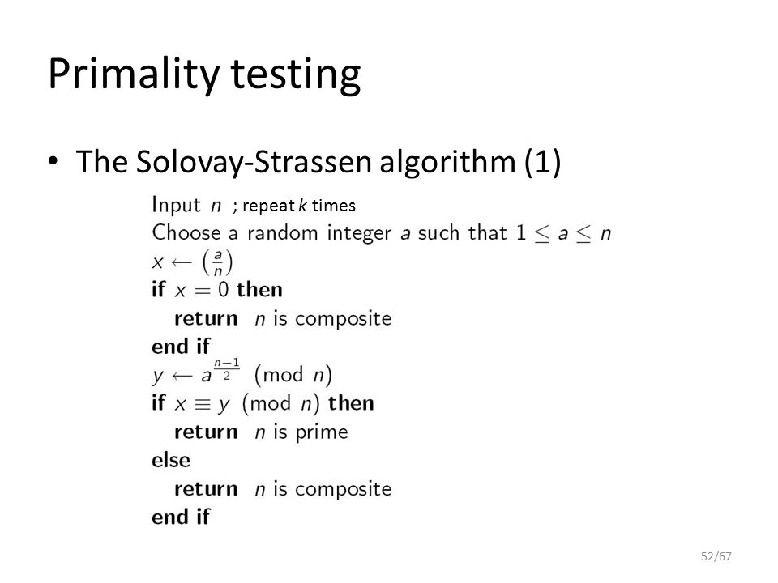
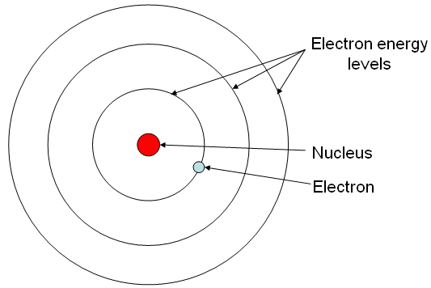
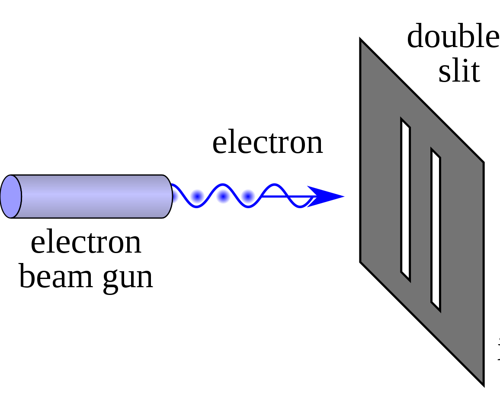
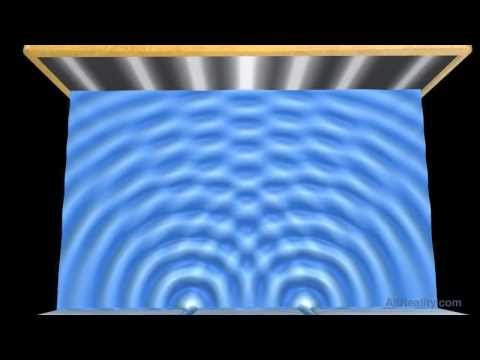
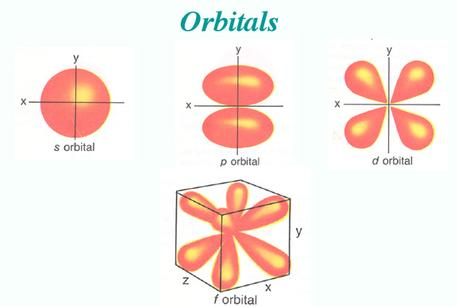
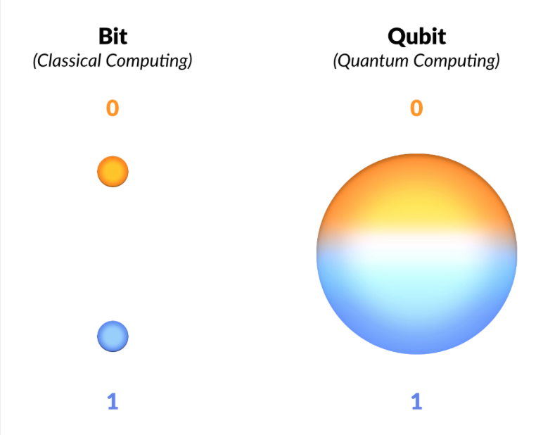
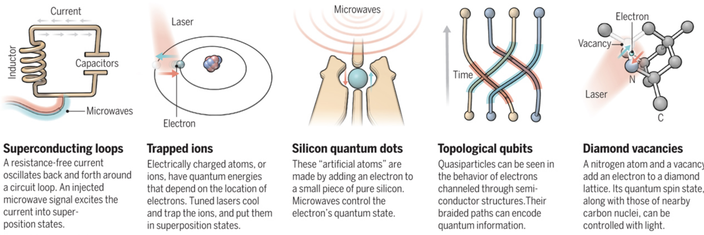

Introduction
!!!WORK IN PROGRESS!!!
The content of this book is INCOMPLETE and may contain unintended FACTUAL and TYPOGRAPHICAL ERRORS.
This is NOT MEANT TO BE A COMPLETE PRODUCT and is subject to revision at ANY TIME.
Continue reading at your own disgression.
Feedback is welcome!

Welcome to the Quantum Computing Codex (QCC) created by Quantum Computing at Davis (QCaD) !
Purpose
This book is designed as guide for those interested in Quantum Computing but just don't know where to start as well as a suitable reference for seasoned Quantum Computing Developers.
The QCC was created in response to the "gap" in Quantum Computing resources between "What is Quantum Computing" vs. Research papers, with very little thorough documentation that would permit a beginner to reach a desired level of proficiency
Citation System
The contents of this book are by no means the work of one individual, relying on an amalgamation of sources that have been presented in what is believed to be the most beginner friendly way possible.
Text
In most cases, you will find a superscript number after a sentence or section. You can scroll to the bottom of the page to find the corresponding name of the source and a URL to it.
However, some sections may have the superscript in the header. This means the subsequent text was heavily based on its original source, and is done to point out that most of the modification lay in summarization or the paraphrasing of details before incorporation in this work.
It is also possible to find smaller superscripts in a section of text that already has a superscript. This is to denote the introduction of work from another source and its overlap with the existing body of text.
Images
Each image is immediately followed by a link to the source. This link is not included in the bottom of each page.
Classical Computation
Before we can delve into the nitty-gritty of how Quantum Computers work, there are a number of ideas in Classical Computing that will help guide your understanding of why Quantum Computing is useful and what it has to offer.
Not understanding these ideas won't stop you from jumping into coding but it helps to really understand the big picture that Quantum Computing is in.
What is "Classical Computation?"
Classical Computation is just a fancier way of addressing the way we've been performing computing for the past 40 or so years: with 1s and 0s or more formally stated as binary.
Source: Binary Code Robot
Computers represent and manipulate data all in binary, usually through millions of special switches (transistors) made of Silicon.
The server delivering the contents of this book, the smartphone in your pocket, and the device you're reading this on are all examples of "Classical Computers" which operate using binary to store and manipulate data.
What do I need to know from Classical Computation?
There are several things that are nice to know
- What a Turing Machine is
- the Church-Turing Thesis
- Computational Complexity
The first three things serve as a foundation for understanding some basic principles in Theoretical Computer Science that then lead to motivations for Quantum Computing (henceforth referred to as "QC").
The subsequent sections will explain these points in more detail.
The Turing Machine
Before we delve into what a Turing Machine is, let us present this definition of an Algorithm as a process or set of rules to be followed in calculations or other problem-solving operations, especially by a computer 1. In plain English, nothing more than series of steps that turns some data into a more desirable form (answer, solution, etc).
With the above in mind, the Turing Machine isn't really a machine so much as an abstract model of computation. It was never meant to be implemented in real hardware. Rather, it was intended as a mathematical tool for studying the execution and output of algorithms.
The machine derives its name from the late British computer scientist Alan Turing who came up with the model in a paper published in 1936 2.
Its goal at the time was to allow people to figure out the extent and limitations of computation and what it could and could not do.
How it Works
This "machine" consists of a infinite tape that is divided into an infinite number of cells.
Inside each cell can be the following:
- a
1 - a
0 - nothing
Above the tape is a head that can perform the following actions 3
- freely move about the tape (left/right)
- read a cell
- write to a cell
- change its internal state (which determines the next course of action for the head)
- end the computation
The following diagram is a visual representation of the above:
Source: Quantum-Logical Computer by August Stern
The model itself is made more remarkable by the Church-Turing Thesis which you'll be introduced to in the next section.
Citations:
- Google Definition
- Encyclopedia Britannica Entry on Alan Turing
- Quantum Computing and Shor's Algorithm by Matthew Hayward - section on Turing Machines
Church-Turing Thesis
In the previous section, we looked at what exactly a Turing Machine (referred to as a "TM" henceforth) is and alluded to the Church-Turing Thesis which states the following:
If any algorithm can be performed on any piece of hardware there is an equivalent algorithm for a Turing Machine which will perform the exact same task
The acceptance of this thesis has the following effects:
- Any problem that cannot be computed by a TM is not "computable" in the absolute sense
- If a problem is believed to be computable, a TM capable of computing is possible
With the feasibility of computation being well defined, computer scientists were also concerned with efficiency, that is, how long as well as how much memory would some problem need in order to be computed. 1
Complexity-Theoretic Church-Turing Thesis
In the 1960s and 70s, a number of observations about the efficiency of algorithms on non-TM models of computation led to the creation of a "strengthened" Church-Turing thesis, more formally known as the "Complexity-Theoretic Church-Turing Thesis".
It states the following:
Any algorithmic process can be simulated efficiently using a TM
This property arises from the fact that any algorithmic process that could be solved in another model of computation can be SIMULATED on a TM.
The "efficiently" in the thesis means that the number of operations (or other resource consumed like memory) it takes to run an algorithm grows polynomially (or less) relative to the size of data inputted. This idea of efficiency (data input size vs growth of the number of operations) will be explained in more detail in the next section and formalized considering that this is the universally accepted way of defining an algorithm's complexity. 2
Challenges to Complexity-Theoretic Church-Turing Thesis
In the mid-1970s, an algorithm created by Robert Solovay and Volker Strassen known as the Solovay-Strassen Test challenged the Complexity-Theoretic Church-Turing Thesis by given an algorithmic process THAT COULD NOT be simulated efficiently using a Turing Machine.
The Solovay-Strassen test can probabilistically determine whether or not an integer is prime. Probabilistically means that even when the algorithm tells you an integer is prime or not, there exists the possibility that result is incorrect. However, if you repeatedly run the test, you can decrease the uncertainty to a desirable point and get closer to a more accurate result.
The steps for the entire algorithm are presented below. Don't concern yourself too much with anything beyond the first three lines.

Source: Public Key ciphers 1 Session 5. by Katrina Morrison
Note the step:
Choose a random integer a such that \(1 \le a \le n\)
The "random" part here is troubling because there exists no efficient method of choosing a random integer on a TM, especially not a truly random integer.
Beyond the TM
To be more specific, there is no efficient method on a Deterministic Turing Machine. The TM that was presented to you in the "Turing Machine" section is a Deterministic Turing Machine (now referred to as a DTM henceforth) because each symbol on the tape refers to one and only one course of action (move one cell left/right, erase, write, etc.).
There does however, exist an efficient method on a Probabilistic Turing Machine which chooses between possible actions according to a probability distribution rather than a fixed set of instructions. The probabilistic TM falls into a class of TMs known as Non-Deterministic Turing Machines (referred to as a NTM henceforth) which, instead of having one symbol correspond to one course of action, can have them correspond to a set of different actions from which one is chosen through some procedure.
With the Probabilistic TM, the Complexity-Theoretic Church-Turing thesis was revised to the following:
Any algorithmic process can be simulated efficiently using a probabilistic Turing Machine
Thereby allowing the Church-Turing thesis to maintain its efficiency over such algorithms as the Solovay-Strassen test and anything that requires non-deterministic operations (such as choosing a random integer).
Dawn of Quantum Computing
Solovay-Strassen wouldn't be the only challenge to the Complexity-Theoretic Church Turing thesis. Due to the revision of the thesis from a normal TM to a probabilistic TM, computer scientists wondered if there was some "ultimate" thesis, one that would encompass all simulations of other models of computation efficiently. Motivated by this, in 1985 the British physicist David Deutsch attempted to come up with a computational model that would allow one to simulate ANY arbitrary physical system. Due to the ultimately Quantum Mechanical nature of the physical world, Deutsch posed the idea of computing devices based on quantum mechanics.
In the same decade as Deutsch, Richard Feynman also proposed the idea of Quantum Computing for simulating physical systems, namely, the Quantum Many-Body Problem where due to quantum entanglement between microscopic particles (which you'll be introduced to in more advanced sections), the amount of information required for a classical computer to handle is too prohibitive and we must instead, use approximations.
Onwards to Motivations for Quantum Computing
Despite all these definitions, we still haven't reached the promised goal of understanding WHY we want Quantum Computing (other than Feynman's and Deutsch's goals). We do however, have an understanding of how the principles of classical computation have naturally led to the idea of Quantum Computing.
In the following section, you'll be introduced to the ideas and some light math behind Computational Complexity which is how we characterized the performance of algorithms and Complexity Classes, where we categorize problems by how much time and space they take to solve.
Citations
Computational Complexity
Computational Complexity is a concept used in Computer Science to characterize the resources required for an algorithm to solve a certain problem.
The two resources Computer Scientists are most concerned about are:
- Time (how long does it take?)
- Space (how much storage does it need?)
It should be noted here that "time" gets translated to "number of operations" owing to its ease in comparison of other algorithms.
A Naive Approach
If we're comparing two algorithms we could try to just measure the duration of time and the amount of memory in terms of seconds and units of storage respectively.
The problem with this approach is that it's highly platform specific meaning you might get different running times/memory usage if you used a different machine. Furthermore, doing multiple runs might even give different times owing to the nature of Operating Systems, other processes, etc.
This proves to be rather problematic in comparing algorithm performance as there isn't any sense of a frame of reference for us.
Luckily, there is one property of algorithms that remains the same regardless of what machine it runs on: The growth of resource consumption relative to its input.
The growth itself has quantifiable properties that computer scientists like to focus on, such as the best-case, worst-case, and average-case scenarios.
The case that the majority are concerned with however, is the worst-case scenario. That is, given some input, what is the largest growth we can expect in terms of resource consumption?
Such a property is mathematically formalized as Big-O notation.
Big-O Notation
Big-O notation is a way of defining the upper-bound of an algorithms growth relative to its input or in plain English, the "worst case scenario".
The "growth" usually defaults to time complexity and therefore, number of operations unless there has been explicit statement that it is memory complexity that is being analyzed.
The exact definition is presented below:
\( f(n) = O(g(n)) \) if there exists a positive integer \( n_0 \) and a positive constant \( c \), such that \( f(n) \le c \cdot g(n) \hspace{0.5cm} \forall \hspace{0.1cm} n \ge n_0 \)
In plain English, a function \( f(n) \) can be considered "Big-O" of \( g(n) \) if you can find a number to plug into n such as (\( n_0 \)) and a constant \(c \) such that there is a point where \( c \cdot g(n) \) exceeds all values of \( f(n) \).

Let's try a quick example.
I have an algorithm who's resource consumption given some input data \( n \) grows by \( f(n) = 2n^2 + n + 5 \).
To find a suitable \(g(n)\) we just need to find some function that can, with some slight modification, outpace \(f(n)\)'s growth rate.
We could choose something like \(n!\) but the goal of Big-O is to find the best fitting bound , one that still fits the definition but bounds \(f(n)\) as close as possible from above.
With that in mind, \(10n^2\) can easily grow faster than the given \(f(n)\). To truly satisfy the definition, we need to find an exact \(n_0\). The constant \(10\) in front of the \(10n^2\) already satisfies the first requirement of having a positive constant multiplier \(c\).
We graph the two functions together and find our \(n_0\):
With the function found, as well as a suitable \(n_0\) and \(c\), we can now say the following
The function \(f(n)\) is has Big-O of \(n^2\) time complexity.
With that understanding, the image below gives an idea for the different kinds of complexities you'll frequently bump into in the computer science world, as well as how to think of them qualitatively (is \(O(n)\) good or bad? What about \(O(log(n))\)?)

Source: Big-O Cheat Sheet
Note: Elements in the above diagram is equivalent to data inputtedTractability
Two words you might hear thrown around quite frequently (especially in Quantum Computing) is the idea of "tractability".
If an algorithm is intractable, its Big-O time complexity is greater than any polynomial or to be more formal, exceeds any variant of \(O(n^k)\) where \(k\) is some constant. The term superpolynomial is also equivalent.
If we look at the chart above, that would mean algorithms that have \(O(2^n)\) or \(O(n!)\) complexities are intractable.
In the opposite sense, if an algorithm is tractable it means its Big-O time complexity is less than or equal to that of any polynomial. The term subpolynomial is also equivalent.
If we go back to the chart, that would mean algorithms that have \(O(log(n))\), \(O(1)\), and \(O(n)\) time complexities can be considered to be tractable.
Complexity Classes
Complexity classes are a way of categorizing problems that take the same amount of resources to solve. You won't need to know what exactly the classes are for understanding the motivations behind Quantum Computing in the next section but it does help in understanding the degree of difficulty certain problems are considered to have as well as a more formal definition of the motivations you'll see soon.
Goals of Quantum Computing
In the previous sections, we covered the idea of Turing Machines, the Church-Turing Thesis, as well as giving the mathematically accepted definition of complexity and how we can use it to quantitatively understand algorithm performance.
With all that behind you, you'll be able to understand the two main interests driving Quantum Computing.
They are as follows:
- Can a Quantum Computer execute algorithms which are considered uncomputable on classical computers?
- Given an algorithm a TM can compute but is intractable, can it be made tractable through Quantum Computing?
The second point can also be understood in the more broad terms of, "Can a Quantum Computer provide some speed-up of an algorithm that a classical computer cannot?"
Speed-Up Examples
Some examples of these speed-ups are Grover's Algorithm and Shor's Algorithm, two of the most commonly cited algorithms in Quantum Computing.
Grover's Algorithm
Grover's Algorithm can, given an output value and a function, find the specific input value required to produce that output value in:
\[ O(\sqrt{n})\]
time-complexity. This is fairly astounding considering that at the bare minimum, you need:
\[ O(n) \]
time complexity to check each element within the domain of the function.
Shor's Algorithm
Shor's Algorithm is an algorithm for integer factorization. It has garnered a lot of attention due to the fact that, should it be implementable in the future, can pose a threat to public-key cryptography which relies on the fact that integer factorization for large values is incredibly prohibitive to do on classical computers.
The current fastest algorithm for integer factorization on classical computers is the General Number Field Sieve which works in sub-exponential but superpolynomial time:
\[ O(e^{1.9(log \ N)^{1/3}(log \ log \ N)^{2/3}}) \]
Shor's promises the following speed-up:
\[ O((log \ N)^{2} (log \ log \ N)(log \ log \ log \ N))\]
An exponential speed-up over General Number Field Sieve
Complexity Classes
Complexity classes are a way of categorizing problems based on the resources required to solve them.
This ties in nicely with Big-O and our definition of resource consumption based on the size of an algorithm's input.
The following Euler Diagram gives a nice graphical overview of the four most commonly encountered complexity-classes.
Source: Wikipedia Entry for NP-Completeness
{kind=link}
Decision Problem
All the problems that the four categories above (P, NP, NP-Complete, NP-Hard) describe are known as Decision Problems.
A Decision Problem is any problem that has a yes or no answer. For Example:
- Given an integer, is it even or odd?
- Given a graph, does a Hamiltonian Cycle exist in it? (Given a bunch of points with lines between them, does a line exist that goes through each point exactly ONCE exist?)
P
P is the set of all decision problems that can be solved in polynomial time by a Deterministic TM (DTM), hence the letter "P" for "Polynomial time" 1
Recall that a DTM is a TM where each symbol on the tape corresponds to one and only one course of action.
Problems that fall into the P Complexity Class are:
- Identifying palindromes (Does a word remain the same if read from right to left as it is left to right?)
- Recognizing Substrings (given two strings a and b, can we find b in its entirety inside a?)
- Finding the Greatest Common Divisor of two numbers
NP
NP is the set of all decision problems that can be solved in polynomial time by a Non-Deterministic Turing Machine (NTM), hence "NP" for "Non-Deterministic Polynomial time". Alternatively, NP is the set of decision problems which can be verified in polynomial time by a DTM.2
Recall that an NTM is a TM where each symbol on the tape can correspond to a set of different actions each time an instruction is executed.
A problem that falls into NP is Integer Factorization where, given two numbers \(n\) and \(m\), does an integer \(f\) exist constrained by \(1 < f < m \) such that \(f\) divides \(n\)? Finding the solution will require some algorithm on an NTM but to actually verify if the solution is correct we just have to perform the division \(n / f \) which can be done in polynomial time by a DTM. 3
NP-Complete
NP-Complete is the set of problems that other problems in NP can be reduced to in polynomial time by a DTM.
This means if we can find an algorithm that can efficiently solve an NP-Complete problem, then other problems in NP can also be solved efficiently IF they can be reduced to the NP-Complete problem form.
A problem that falls into NP-Complete is the 3-SAT problem.
You're given a set of boolean variables arranged in the following configuration:
(X or Y or Z) AND
(B or D or F) AND
(J or K or L) AND
...
and you need to find the proper value for each boolean variable that will make the entire expression return "True".
It has been proven that every problem in NP is reducible to this problem. IF a polynomial time algorithm can be found to solve 3-SAT, it can solve every problem in NP efficiently. 4
NP-Hard
NP-Hard is the set of problems that are at least as hard as the NP-Complete problems. NP-Hard problems don't have to be in NP and they don't have to be decision problems either.
If you go back to the Euler Diagram, you'll find that it intersects with NP but also goes beyond it.
A more precise definition is that a problem \( X \) can be considered NP-Hard if there is an NP-Complete problem \( Y \) such that \(Y \) can be reduced to \(X \).
Since any NP-Complete problem can be reduced to any other NP-Complete problem in polynomial time, all NP-Complete problems can be reduced to any NP-Hard problem in polynomial time. Therefore, if you can find a solution to one NP-Hard problem in polynomial time, there is a solution to ALL NP problems in polynomial time.
A significant NP-Hard problem is the Halting Problem which states that given a program and its input, can you determine if the program will stop?. This is a decision problem but does not fall into NP. Any NP-Complete problem can be reduced to this one. 5
QC Complexity
In the realm of QC, there are analogues to the classes you've seen above. One of the yet unsolved questions in QC is where these classes lay with respect to other classes like P and NP. Finding this out is highly desirable because it could lead to the discovery of more problems that can be reduced or made faster on Quantum Computers that was once prohibitive to perform on classical computers.
There are two QC Complexity Classes you may encounter that are described here for the purpose of being thorough. Keep in mind that you do not need to know how a Quantum Computer works yet to understand these classes. The four classes above as well as the provided explanation should be enough for now.
BQP
BQP or Bounded-Error Quantum Polynomial Time (a mouthful), is a class of decision problems that is solvable by a Quantum Computer in polynomial time with an error probability of at most \( 1/3 \) for all instances. 6
It seems incredibly odd that we have to worry about "error" in our result but this comes from the nature of Quantum Computing, and Quantum Mechanics itself. In the quantum realm, the absolutes of our physical world give way to probabilities. The singular, absolute answers that Classical Computation gives are non-existent as Quantum Computers give answers in a kind of probability distribution.
This means that most quantum computing algorithms have to be run multiple times (similar to the Solovay-Strassen Test mentioned in the Church-Turing Thesis section) to obtain an accurate answer.
The classical analogue to BQP is BPP or Bounded-Error Probabilistic Polynomial Time which goes back to NTMs and the introduction of a probabilistic TM. In BPP, decision problems exist that are solvable in polynomial time with an error probability of at most, \( 1/3 \) by a probabilistic TM. BPP in turn, is the probabilistically bound relative of the more familiar P complexity class you should be familiar with which works with DTMs.7
Shor's Algorithm falls into the BQP Complexity class as well as some other notable problems such like the simulation of quantum systems and the Discrete Logarithm (to be explained in later sections, but of great importance to cryptographic systems).8
QMA
QMA or Quantum Merlin Arthur is class of decision problems for which a Quantum Computer can verify a solution in polynomial time. If this sounds familiar, it can be considered the quantum analogue of the NP class 9. It still has the error probability component you saw in BQP but it's a little more nuanced.
If the answer to the solution is YES, verification should be correct \( 2/3 \) of the time but if it is NO, verification should not say it is correct with an error of \( 1/3 \). There is some flexibility in these fractional bounds in that you can redefine them and the problem can still be considered to be in QMA but the accepted standard is \( 2/3 \) vs \( 1/3 \) 10
Citations
- Stack Overflow, What are the Differences Between NP, NP-Complete, and NP-Hard?
- Wikipedia Entry, NP (complexity)
- see 1.
- see 1.
- see 1.
- Wikipedia Entry, BQP
- Wikipedia Entry, BPP (complexity)
- see 6.
- CMU 18-859BB, Fall 2015 Lecture 24: Quantum Merlin-Arthur by Ryan O'Donnell & Sidhanth Mohanty
- Wikipedia Entry, QMA
How Quantum Computing Works
Up until now, you've received a hearty dose of all these formal definitions and goals for Quantum Computing but we've never really touched on HOW it works besides hinting at it in the explanation of BQP time complexity.
Now that you know the goals and driving motivations for Quantum Computing, you can start to understand its principles of operation in context of performance and how they can give an avenue to those speed-ups witnessed.
There are three main topics we'd like to go over:
- Quantum Mechanics
- The Qubit
- DiVincenzo's Criteria
Quantum mechanics will dictate the behavior of the Qubit, which is the fundamental unit of computation that Quantum Computers use, while DiVincenzo's Criteria are the criteria that need to be satisfied to have a Quantum Computer that can execute Quantum Algorithms and simulations.
Superficial Quantum Mechanics
Before we can start to understand how Qubits operate, there are some ideas in Quantum Mechanics you need to have a strong understanding of. A mastery of this material will prove invaluable in understanding the Bloch Sphere and Dirac Notation, two mathematical tools crucial to any quantum programmer.
The "superficial" in the title is intentional, as the concepts presented in this section are important but are introduced in a way that is as removed as possible from the actual underlying Quantum Mechanical phenomena, which will be investigated when you get introduced to the math that pairs with the field.
What are Quantum Mechanics?
Quantum Mechanics is the mathematical framework used to describe the behavior of motion and interaction in subatomic particles.
At such small scales, Classical Physics and the Newtonian Mechanics we are intuitively familiar with in our daily lives completely falls apart and unusual properties such as Superposition and Entanglement begin to appear.
Before we explain some phenomena, it's useful to know how they were identified in the first place.
Superposition
Superposition is described as the ability of a quantum system to be in multiple states at the same time until a measurement is performed.
To make this vapid definition more useful to us, let's look at a physical example through an experiment known as the Double-Slit Experiment.
Double-Slit Experiment
For the large majority of our youthful education, we learn to think of the atom like this:

pay close attention to the electrons. The way they're illustrated in particular, as point-like masses orbiting around the nucleus with an associated negative charge.
Now let's perform an experiment. We'll set up a beam of electrons aimed at a barrier with two slits and have another barrier behind it to see how the electrons come out:

Source: Double-slit Experiment, Wikipedia Entry
{kind=link}
(The last barrier has been intentionally hidden from display)
Before we turn on the beam, let's make a prediction about what we'll see. If we go off what we know in the first image about electrons being these point-like masses, we should see the following:

Source: Physics in a minute: The double slit experiment
The electrons will just repeatedly hit the same two places, sort of like shooting tennis balls through the same double slit but larger.
If we turn on the beam, we get the following:

Source: Double-slit Experiment, Wikipedia Entry
Note that the pattern produced is far from what we predicted! It's a continuously varying pattern of intensity, periodic in nature, that's a far stretch from what we predicted.
IT DOES however, match the pattern generated if we were to pass some kind of wave through the two slits:

Source: Double-slit Experiment - Water Wave Interference Pattern
Intuitively, we'd have to think that electrons must somehow be waves instead of particles. But how can something with charge and treatable as a point-like mass just turn into a wave?
Perhaps there is a problem with our experimental setup itself. Maybe, because we're shooting a stream of electrons through the double-slits the electrons are interacting with themselves in such a way that when they hit the barrier they produce a wave interference pattern.
Let's try just shooting one electron at a time. That should give us the two-band pattern we predicted earlier.
What do we see?

The same thing! Some how, individual electrons also seem to exhibit this wave-particle duality where it can behave both as a wave and a particle! What is rather remarkable is that each electron isn't "communicating" or sharing information with the electrons after it but it seems as if the electrons "know" where they need to go on the barrier to create a wave interference pattern.
This led physicist Erwin Schrodinger to formulate the idea that the electron wasn't really a particle so much as a wave spread out throughout space. This idea is extendable to other quantum mechanical systems and has a mathematical counterpart known as the Schrodinger Equation.
The Schrodinger Equation is a partial different equation, which means that solving it doesn't give you a number but another function. This function is known as the Wave Function which describes the probability a quantum mechanical system will be in a certain configuration.
Let's go back to our definition of what a superposition is:
Superposition is the ability of a quantum system to be in multiple states at the same time until a measurement is performed.
The states mentioned are anything that can be measured about the particle such as location, energy, momentum, etc. In this case, our experiment concerns itself with location although the energy and momentum of a particle can be obtained from the wave function as well.
The wave function is what allows quantum systems to assume multiple states. The key here is the "probability" part, the particle or system of interest doesn't really represent ALL possible states so much as the chance it'll be in one or a "probability distribution". That's where the "measurement" part comes in.
When the electrons in our experiment interacted with the barrier, the wave function of the electron "collapses", thus forcing the electron to exist in one single location. What used to be an infinite distribution of probabilities must "pick" one value and stick with it. That means that while the particle still acts as a wave, we can't really extract any information because we can only do so through measurement which causes the whole thing to fall apart. To be more precise, we can only measure one thing at a time which means all other desirable data is permanently lost.
We also know that due to this wave function, electrons actually look more like this:

the weird lobes and spheroids you see give the probability of an electron at a certain energy existing at a certain location around the nucleus.
Entanglement
Quantum entanglement occurs when two or more particles become "linked", be it through creation or interaction. Whatever happens to one immediately affects the other, regardless of how far apart they are.
The more "formal" way of defining this is when the wave function of a quantum system (such as two or more particles) can't be described by two separate wave functions. That means that the measurement of one particle causes the function to collapse as a whole, resulting in the other particle exhibiting highly correlated behavior, far from random chance.
A nice way to think of this is imagine having two quarters. They are placed exactly on their sides on a table. They can represent four possible combinations, each with a 25% chance of appearing should you hit the table and let them fall flat. The possibilities are represented in the table below:
| Heads | Tails | |
|---|---|---|
| Heads | 25% | 25% |
| Tails | 25% | 25% |
Now, perform the same setup but tape a piece of cardboard between the same side (connect Heads to Heads for example).
When one coin falls, the other will fall the same way and your probability turns into the following:
| Heads | Tails | |
|---|---|---|
| Heads | 50% | 0% |
| Tails | 0% | 50% |
Now imagine the same thing happening over and over again, but the behavior remains when the cardboard is removed and the coins are infinitely far apart!
This analogy is essentially what Entanglement is, the perfect correlation between two particles or groups of particles.
No-Cloning Theorem
The No-Cloning Theorem is mentioned less frequently than superposition and entanglement owing to the fact that is isn't so much a property qubits need as a consequence of quantum mechanics.
The theorem states the following:
it is impossible to copy a quantum mechanical system in an unknown state to another quantum mechanical system
This means that if I have some quantum system in superposition, I can't "copy" that superposition onto another quantum system and have two exact copies. The reasoning behind this does not have a nice physical analogue but once you're introduced to Dirac Notation, the proof should seem straightforward enough.
The Qubit
In the previous section, we went over several key principles of Quantum Mechanics that govern the most fundamental operations of QC.
In this section, we look at the Qubit, analogous to the "bit" encountered in classical computers as being the fundamental unit of computation. By using multiple bits and manipulating them in certain ways, we can represent, store, and manipulate data to our desired form.
Unlike the bit however, Qubits can leverage the properties of superposition and entanglement we mentioned prior.
Furthermore, for anything to qualify as a qubit it MUST have the above two properties.
Superposition
You're already familiar with the idea of superposition as a consequence of the wave function quantum systems have but now we need to understand how to put this in the context of QC.
We know our classical bit can only have the values \(1\) and \(0\). There is no inbetween, it's one or the other.
Now let's recall what the official definition of superposition is:
the ability of a quantum system to be in multiple states at the same time until a measurement is performed.*
Our prior example of the Double-Slit experiment defined "states" to be equivalent to "locations" although we also mentioned that "any observable property" could be considered a state.
The qubit itself is a quantum mechanical system and therefore can exhibit the property of superposition with a twist: the states that we're interested in isn't location but the probability of it being a \(1\) or a \(0\).
When the qubit is measured, we're guaranteed a \(1\) or \(0\) value but the qubit can also be set to a superposition of the two values meaning that it has a probability distribution of being \(1\) or \(0\) before being measured!
A final, important property of qubits is that although measurement will cause the qubit to collapse to \(1\) or \(0\), we can perform useful manipulations WITHIN the superposition state that affect the probability distribution. This is one of the great powers of QC.

Source: The Computational Power of Quantum Computers: an intuitive guide by Karel Dumon
This result should remind you of the probabilistic nature of Quantum Computation already hinted by the BQP and QMA complexity classes where we a problem needs to be solved correctly AT LEAST some fraction of the time to fall into the quantum complexity classes.
All of this seems more like a nuisance than something to accelerate computation but superposition allows for a property known as Inherent Parallelism.
Inherent Parallelism
In a classical computer, we know that you can use combinations of bits to represent data. Each bit can be in one of two states giving you:
\[ n^{2} \]
possible combinations, where \(n\) is the number of bits you have. Due to the nature of classical computation, you can only manipulate one combination at a time.
In a quantum computer however, we know that superposition allows us to represent multiple states at once. That means with each qubit added we can have
\[ 2^{n} \]
possible combinations, where \(n\) is the number of qubits you have. Furthermore, we can manipulate qubits in this superposition state which is similar to working with ALL the possible states the classical computer could represent SIMULTANEOUSLY.
Superposition and Inherent Parallelism are only part of the Qubit story. Entanglement also plays an incredibly important role.
Entanglement
A solid grasp of the quantum mechanical definition of entanglement prior translates rather nicely to its context in QC.
Just as particles can become entangled, so too can qubits but in a controlled fashion.
Entanglement is particularly useful in Quantum Computing for cryptographic systems as well as quite literally being able to simulate the entanglement that proves to be so prohibitive in the Quantum Many-Body Problem.
A Note on Platform Diversity
Before we can proceed any further, there is a "diversity" among QC platforms that needs to be addressed.
All existing platforms guarantee the properties of superposition and entanglement explained above. They also all suffer from the threat of decoherence which will be explained after this. Beyond that and things start to get kind of hairy.
Owing to the rapid development and infancy of the field, the hardware implementation for actual qubits varies widely. Unlike how classical computation has already settled for universally using silicon and switches called "transistors" to manipulate 1s and 0s, QC is still trying to figure out what qubit design is "best". There is plenty of contention over which one is better, with each kind of implementation having its own pros and cons.
Owing to this diversity, the authors of this guide have opted not to present the hardware details too early, instead focusing on each platform individually after developing the knowledge that still remains universally applicable in QC.
The following image gives just a sneak-peek at some of the different kinds of architectures already in existence (with the exception of Topological Qubits, which are theorized but have yet to be implemented):

Source: Quest for Qubits by Gabriel Popkin
There are also several models of computation qubits are being used for.
The first and most commonly implemented is the circuit model where individual qubits are manipulated using gates. By using a set of gates, we can arrange them in a sequence and put a qubit through it to achieve some desired result. This very similar to how current classical computers use combinations of logic gates to manipulate 1's and 0's and therefore, one of the most intuitive models.
The following picture gives an example of a computation set up in the circuit model, with each line representing a qubit and each box a gate that will manipulate the qubit.

Source: QC - Programming with Quantum Gates (Single Qubits) by Jonathan Hui
Gates give a great degree of flexibility in the expression of algorithms and can represent a Quantum Turing Machine (QTM) which is capable of executing any Quantum Algorithm.
The circuit model is not the only one however, with Adiabatic Quantum Computation (AQC) and Gaussian Boson Sampling (GBS) being two other methods. Both use qubits with the properties above but can't implement a QTM, thereby limiting their ability to execute existing Quantum Algorithms. This doesn't make them any less useful however as both tackle different sets of problems in a more elegant (and/or efficient) fashion than the circuit model does.
There are certain problems that cannot be expressed nicely in terms of gates that seem to fare better through expression through AQC or GBS.
Decoherence
Decoherence is the last property that all qubits have. However, unlike superposition and entanglement it is not required and highly undesirable.
Decoherence is when a quantum system reverts to a classical system through interaction with its environment.
A classical system has no ability for superposition let alone entanglement. As a result, if decoherence occurs during qubit manipulation, errors are introduced as well as data lost.
To prevent such things from happening, most qubit architectures have there own ways of isolating qubits from the environment. The superconducting loop architecture for example, is prone to decoherence due to thermal fluctuations and magnetic disturbance, requiring the whole computer to be immersed in a specialized cooling apparatus and magnetic shielding.
On top of this, many existing Quantum Computers will also use Quantum Error Correction (QEC) to recover from such errors and prolong the period of time available for computation. These protocols are drastically different from standard Error Correction Codes (ECC) owing to the fact that quantum mechanics introduces the No-Cloning Theorem which states that we can't copy a qubit while it's in the superposition state. This is different from the classical realm where I can literally just attach a wire and copy a \(1\) or \(0\).
To subvert this, most QEC protocols use entanglement to determine if a qubit state changed in an undesirable fashion and to correct such an error without having to know the exact state of the qubit.
Criteria for Quantum Computing
At this point, you understand that the criteria a qubit must satisfy are:
- Superposition
- Entanglement
Decoherence and the No-Cloning Theorem aren't necessary but are just consequences of the quantum mechanical principles qubits work in.
Beyond this, there is an even larger set of criteria that need to be satisfied for a device to be considered a true Quantum Computer.
At this point in time, most platforms satisfy the criteria to varying degrees but none has managed to satisfy all of them. Properties of certain qubit architectures even prohibit the realization of some of the criteria.
These criteria are known as the DiVincenzo Criteria and will be explained in the next section. The utility of knowing these criteria is it gives you an idea of the current state of QC, what things a Quantum Computer AS A WHOLE should be able to do, and the future of the field.
DiVincenzo's Criteria 1
In the previous section, we identified the criteria required for qubits. Now we move onto those necessary to construct a Quantum Computer.
These criteria were proposed in 2000 by physicist David P. DiVincenzo. The end-goal is to have a Quantum Computer capable of performing the quantum simulations needed for the Quantum Many-Body Problem as well as executing Quantum Algorithms.
There are seven criteria in total, the first five focus solely on the computational nature of the machine itself. The other two do with the transmission of information through qubits.
These criteria are as follows:
- A scalable physical system with well characterized qubit
- The ability to initialize the state of the qubits to a simple fiducial state
- Long relevant decoherence times
- A "universal" set of quantum gates
- A qubit-specific measurement capability
With the remaining two being:
- The ability to interconvert stationary and flying qubits
- The ability to faithfully transmit flying qubits between specified locations
Let's go ahead and break down some of these criteria.
Scalable Physical System with Well Characterized Qubit
A well-characterized qubit is one with a well-defined Hamiltonian, the Hamiltonian being a a function that can tell you the energy (given as the sum of Potential and Kinetic Energies) when the qubit is in a certain configuration.
A scalable physical system means that not only should we have the ability to control one qubit, but many, many more. This is one of the greater challenges most QC platforms face because linearly increasing the number of qubits often results in an exponential increase in the experimental setup which renders any speed-up moot.
Initialize the State of Qubits to a Simple Fiducial State
Prior to executing a computation, the qubits should be in a well defined state. Usually, most platforms tend for the lowest energy state (accepted to be equivalent to \(0\) in classical computation) however, it can be any arbitrary state so long as it is well defined.
Long Relevant Decoherence Times
In the section on qubits, we mentioned that a constant problem Quantum Computers must deal with is prevent qubits from decohering, causing data loss and introducing error to computations.
We want the time to decoherence to be long enough so that we can perform useful operations on the qubit.
A "Universal" Set of Quantum Gates
In classical computing, it's possible to have a gate or set of gates that can, in turn, create any other possible configuration of gates.
Take for example, the NOR gate below:

Source: Universal Logic Gates and Complete Sets
Combining multiple NOR gates makes it possible to achieve any other desired set of gates.We want the same property in Quantum Computing, having a set of gates that can be used to create any other set of gates. This is particularly useful because it allows us to take existing Quantum Algorithms and "translate" them into a form more suitable for physical implementation or at the very least, into the operations we can currently perform.
However, this proves to be a bit problematic considering that the superposition mentioned before is an infinite spectrum between \(1\) and \(0\), making exact gate set by gate set simulation impossible.
It is possible however, to have a set of gates simulate another set with an extremely good approximation. This is a result of the Solovay-Kitaev Theorem which shows that you can take any desired qubit operation and decompose it into a sequence of gates to approximate it. 2
Qubit Specific Measurement Capability
After performing a computation, you want to obtain the state of the qubit which should be your result. The Quantum Computer in question should be able to obtain this information accurately.
Ability to Interconvert Stationary and Flying Qubits
A stationary qubit is one that remains in the Quantum Computer that generated while a flying qubit is one that can be transmitted back and forth between Quantum Computers.
Converting between them should allow information to be reliably sent and received without fear of decoherence, which falls into the last criteria of The ability to faithfully transmit flying qubits between specified locations.
Progress in these areas has been an ongoing challenge, especially considering that decoherence inevitably happens in any environment outside of the Quantum Computer's control.
Citations
Mathematical Tools
Before we can take the leap into understanding how gates work and understanding existing quantum circuits/algorithms, you'll need to have a few mathematical tools under your belt
They have been split into four sections
- Linear Algebra
- Dirac Notation
- Core Quantum Mechanics
- Bloch Sphere
Linear Algebra is the bare minimum you'll need to hit the ground running. We start simple with vectors and move our way up to the Outer Product, all key tools you'll need to express qubit operations.
Once the math is settled, we introduce a new, succinct way of expressing a lot of the Linear Algebra you see called Dirac Notation which is the icing on the cake.
Core Quantum Mechanics digs further into the Quantum Mechanics that Dirac Notation was intended for as well as giving key insights into some of the peculiarities of QC.
We top things off with a visual grand finale, the Bloch Sphere which provides a nice way of actually "seeing" the superposition state a singular qubit is in.
Linear Algebra
The following are a number of operations in Linear Algebra that are core to QC. It is highly recommended you make yourself familiar with these operations and practice as necessary.
Their exact mapping to Quantum Computing/Mechanics will not be explained now but will be revealed soon enough within the sections on Dirac Notation and Core Quantum Mechanics
Vectors
A Vector should be thought of as a quantity with more than one piece of information.
You may already be familiar with this kind of notation:
\[ \vec r = 10\hat{x} + 11\hat{y} \]
where a vector is always given as some lower-case letter with an arrow on top.
This simply means that if I give you a point on the XY plane (say, \( (1,1)\) ) and I ask you to apply the above vector to it, you move 10 units in the X-direction and 11 units in the y-direction to obtain a new location: \((11, 12)\)
A more succinct and equivalent notation you'll see in this book is the following:
\[ \vec r = \begin{bmatrix}10 \\ 11 \end{bmatrix} \]
where the \(\hat{x}\) and \(\hat{y}\) are implicit from the ordering of the numbers from top to bottom.
Vectors can be thought of even more abstractly as ways of grouping together related values of a system, like how in Physics we say a vector represents both magnitude and direction of a force.
The "direction" component makes sense because after all, it does tell you where something will end up but the magnitude part is a little more elusive. We think of "magnitude" as how strong something is. It would seem intuitive to link that to how long the vector is but how do we extract that information given the two values which are reserved for telling us where to go?
The answer lies in the pythagorean theorem. Given the following vector:
\[ \vec r = \begin{bmatrix} r_{1} \\ r_{2} \\ \vdots \\ r_{n} \end{bmatrix} \]
We find its length like so:
\[ \left\lVert \vec r \right\rVert = \sqrt{r_{1}^2 + r_{2}^2 \cdots + r_{n}^2 } = magnitude \]
Where the double vertical bars around the vector indicate that we want its length.
In Quantum Mechanics, vectors are used to represent the state that a system is in as well, which leads us to the topic of Linear Combinations
Linear Combinations and Span
In the example above:
\[ \vec r = 10\hat{x} + 11\hat{y} \]
Possesses another, more implicit meaning.
Most of us look at the \(\hat{x}\) and \(\hat{y}\) to just tell us to go some n units in those "directions". The "directions" however, are vectors themselves.
More specifically, they are known as unit vectors which have a magnitude (equivalent to length) of 1. Unit vectors always have that little arrow above them (a "hat") and are useful in defining any other arbitrary vector. The set of arbitrary vectors that can be created is known as the span of the vector pair and as long as your vectors aren't parallel (if you overlap them, they don't stay in a single line) you can generate any other vector you want.
The \(\hat{x}\) and \(\hat{y}\) vectors are defined like so:
\[ \hat{x} = \begin{bmatrix} 1 \\ 0 \end{bmatrix}\]
\[ \hat{y} = \begin{bmatrix} 0 \\ 1 \end{bmatrix}\]
We can define any vector we want as a linear combination of the two vectors. This means that if I wanted to create a vector representing -10 steps in the X-direction and 20 steps in the Y-direction, I take \(\hat{x}\), scale it by -10 (making it longer by 10 units and go in the -x direction) and \(\hat{y}\), scale it by 20 (make it longer by 20 units) and combine them to get the following:
\[ \vec r = -10\hat{x} + 20\hat{y}\]
Or to be more verbose:
\[ \begin{bmatrix} -10 \\ 20 \end{bmatrix} = -10 \cdot \begin{bmatrix} 1 \\ 0 \end{bmatrix} + 20 \cdot \begin{bmatrix} 0 \\ 1 \end{bmatrix} \]
Now let's take things one step further. The only reason we use the \(\hat{x}\) and \(\hat{y}\) vectors is because of convenience. They lie directly on the x and y-axes we're already so accustomed to defining the locations of things with.
We could just as easily define the following pair of vectors:
\[ \vec \alpha = \begin{bmatrix} 3 \\ 0 \end{bmatrix} \]
\[ \vec \beta = \begin{bmatrix} -2 \\ 5 \end{bmatrix} \]
And get any other vector we want through the following linear combination:
\[ \vec \gamma = c_0 \vec \alpha + c_1 \vec \beta \]
Where \(c_0\) and \(c_1\) are constant values that tell us how to scale the vectors so they can be added and get us to a point of interest. You should also note that the pair of vectors didn't have to be unit vectors either.
This ability to create vectors from linear combinations of others is key to many qubit manipulations as quantum states can be represented as a combination between two base vector pairs which, can be arbitrarily defined!
Inner Product
The Inner Product or more commonly known as the Dot Product is a kind of multiplication for vectors.
Recall that when we multiply a vector by a constant (more formally known as a scalar), we just multiply each element in the vector to get another vector of the same dimension.
Here's an example:
\[ \vec r = \begin{bmatrix} 1 \\ 0 \\ 3 \end{bmatrix} \] \[ c = 2\] \[c \cdot \vec r = 2 \cdot \begin{bmatrix} 1 \\ 0 \\ 3 \end{bmatrix} \ = \begin{bmatrix} 2 \cdot 1 \\ 2 \cdot 0 \\ 2 \cdot 3 \end{bmatrix} = \begin{bmatrix} 2 \\ 0 \\ 6 \end{bmatrix}\]
The geometric interpration of this is that we have shrunk or extended (scaled) the vector in length.
The Dot Product is rather similar but we no longer have a constant, replacing it with another vector. The vector in question must have the SAME NUMBER OF ELEMENTS as the the vector being multiplied.
It is generalized like so:
\[ \vec a = \begin{bmatrix} a_1 \\ a_2 \\ \ldots \\ a_n \end{bmatrix} \quad\quad \vec b = \begin{bmatrix} b_1 \\ b_2 \\ \ldots \\ b_n \end{bmatrix} \] \[ \vec a \cdot \vec b = (a_1 \cdot b_1) + (a_2 \cdot b_2) + \ldots + (a_n \cdot b_n) \]
We took each element in the same position of each vector, multiplied the values, and then added each subsequent time to get a single value/scalar.
The following is an example with real numbers:
\[\vec a = \begin{bmatrix} 5 \\ -1 \\ 3 \end{bmatrix} \quad\quad \vec b = \begin{bmatrix} 3 \\ 2 \\ 1 \end{bmatrix} \]
\[\vec a \cdot \vec b = (5 \cdot 3) + (-1 \cdot 2) + (3 \cdot 1) = 15 + -2 + 3 = 16 \]
With this knowledge, we can redefine what it means to find the magnitude of a vector. In the beginning, we said that you could find it by taking each of its components, squaring them, adding them up and then taking the square root of it all. In essence, an augmented pythagorean theorem.
An equally valid interpretation is to take the dot product of a vector with itself and square that. The dot product merely acts as a neat alias for the squaring and square root operations making things slightly more succinct:
\[ \left\lVert \vec a \right\rVert = \sqrt{\vec a \cdot \vec a} \]
There is also an elegant geometric interpretation of the dot product:
It is the "amount" that one vector overlaps or projects onto another vector as depicted in the image below:
Source: Math Insight - the dot product
That amount of "overlap" can also be interpreted as the magnitude (length) of the vector of interest times the cosine of the angle it makes with the vector it projects onto.
The ability to do a dot product ties very closely with more advanced operations in linear algebra like matrix multiplication and the complex dot product which adds some more rules on top of the existing dot product presented here.
Matrices
Recall that we defined vectors as a quantity with more than one piece of information.
Matrices can also possess the same definition but to an even greater extent.
Note that vectors can only have a bunch of numbers "single file". They stay in one single row or column. With matrices, you can have any arbitrary number of rows AND columns.
They are represented as such:
\[ \boldsymbol{A_{m,n}} = \begin{bmatrix} a_{1,1} & a_{1,2} & \cdots & a_{1,n} \\ a_{2,1} & a_{2,2} & \cdots & a_{2,n} \\ \vdots & \vdots & \ddots & \vdots \\ a_{m,1} & a_{m,2} & \cdots & a_{m,n} \end{bmatrix} \]
Where we use a bold, upper-case letter to represent the matrix and access a singular value in the matrix through 1-based indexing and the notation \(A_{m,n}\), where \(m = row \enspace index\) and \(n = column \enspace index\).
When we describe matrices, one of the first things we care about is the size, which is simply defined as the number of rows by the number of columns. In the example above, we would give the size as follows:
\[ m \times n\]
Vectors as Matrices
Something that should be given special attention is the fact that we now define vectors as being a matrix but with a row or column size restricted to 1 (i.e. \(m \times 1\) or \(1 \times n\)). We let the other dimension be arbitrarily defined.
Doing this introduces two types of vectors and we must now pay attention to their orientation: the row vector and the column vector
The row vector has dimensions \(1 \times n\) and looks like the following:
\[ \vec a = \begin{bmatrix} a_1 & a_2 & a_3 & \cdots & a_n \end{bmatrix} \]
The column vector has dimensions \(m \times 1 \) and looks like the following:
\[ \vec b = \begin{bmatrix} b_1 \\ b_2 \\ b_3 \\ \cdots \\ b_n \end{bmatrix} \]
Quantum mechanics usually favors the column vector representation which is what this guide adheres to. The actual orientation is arbitrary for representing the actual values contained but for certain operations it becomes something one must be aware of.
With this knowledge, there are two important operations you need to be able to perform with matrices: find the Conjugate and Transpose given any vector/matrix.
Conjugate
Matrices and Vectors are not just limited to holding groups of integers and it is not uncommon to encounter complex numbers when dealing with them in Quantum Mechanics.
A common operation you'll see is to find the conjugate where if I had something like \(a+bi\), applying conjugation gives me \(a-bi\) and vice versa if I was given \(a-bi\). Note that the real component of the complex number remains untouched.
For vectors and matrices, this just means finding the conjugate for each element:
Given a vector:
\[ \vec h = \begin{bmatrix} 1+i \\ 3-2i \\ 9+4i \end{bmatrix} \]
The conjugate would be like so:
\[ \vec h^* = \begin{bmatrix} 1-i \\ 3+2i \\ 9-4i \end{bmatrix}\]
Given a matrix:
\[ \boldsymbol{A} = \begin{bmatrix} 1+2i & -4i \\ 9+7i & 10 \end{bmatrix} \]
The conjugate is:
\[ \boldsymbol{A}^* = \begin{bmatrix} 1-2i & 4i \\ 9-7i & 10 \end{bmatrix} \]
We use the \(*\) with vectors and matrices to represent the conjugate version.
Transpose
A transform simply means that we swap the rows for the columns or "rotate" the matrix around its diagonal which always spans from the upper leftmost corner to the lower right corner in a clean diagonal (doesn't skip numbers) from one value to the next.
Source: Transpose and Trace of a Matrix, University of Manitoba, Math 1220 Linear Algebra 1 by Michael Doob
If I have a matrix:
\[\boldsymbol{A} = \begin{bmatrix} 1 & 2 & 3 \\ 4 & 5 & 6 \\ 7 & 8 & 9 \end{bmatrix} \]
its transform will be the following: \[\boldsymbol{A}^\intercal = \begin{bmatrix} 1 & 4 & 7 \\ 2 & 5 & 8 \\ 3 & 6 & 9 \end{bmatrix} \]
Where the \(T\) denotes the transformed matrix.
For column and row vectors, the manipulation is even easier as you're restricted to a single row or column.
If you have a vector like so:
\[ \boldsymbol{H} = \begin{bmatrix} 3 \\ 4 \\ 8 \end{bmatrix} \]
Then the transform would give the following:
\[ \boldsymbol{H}^\intercal = \begin{bmatrix} 3 & 4 & 8 \end{bmatrix} \]
Matrix Multiplication
Just as we can perform multiplication on vectors through the dot product, we can also do it for matrices.
Instead of focusing on individual elements however, we must turn our focus to whole rows and columns, treating them as vectors and then performing a dot product.
Before we can show how it is performed, there is also a dimension-matching requirement, similar to how vectors need to have the same number of elements for a dot product to be performed.
The requirement is that the number of columns in first matrix must match the number of rows in the second matrix. Furthermore, the dimensions of the resulting matrix are equal to the number of rows in the first matrix followed by the number of columns in the other matrix.
For example, if we are multiplying a \(3 \times 5\) matrix by a \(5 \times 9\) matrix, we know that we can perform matrix multiplication because the columns in first matrix (5) match with the rows in the second matrix (5). Furthermore, we can deduce the size of the final matrix to be \(3 \times 9\) from the rows in the first by the columns in the last.
You may have already noticed that this requirement leads to a rather counter-intuitive behavior you don't normally see in multiplication.
In multiplication with numbers, and even the dot product, the order of your values does not matter:
\[2 \times 3 = 3 \times 2\]
and
\[\vec a \cdot \vec b = \vec b \cdot \vec a\]
But with matrices, the order DOES matter because if I take that example above and switch the order, the dimensions are no longer valid to perform multiplication and even if they were valid, the resulting size of the matrix would be different as well.
This gives the following property:
\[ \boldsymbol{A} \cdot \boldsymbol{B} \neq \boldsymbol{B} \cdot \boldsymbol{A} \]
Therefore, one has to exercise care when stating which matrix is getting multiplied by another matrix.
Now let us look at how the actual multiplication is performed.
Let us take an example of two matrices below:
\[ \boldsymbol{A} = \begin{bmatrix} a_{1,1} & a_{1,2} & a_{1,3} \\ a_{2,1} & a_{2,2} & a_{2,3} \\ \end{bmatrix} \quad \boldsymbol{B} = \begin{bmatrix} b_{1,1} & b_{1,2} \\ b_{2,1} & b_{2,2} \\ b_{3,1} & b_{3,2} \end{bmatrix} \]
First, we need to make sure the dimensions check out. Matrix A has the dimensions \(2 \times 3\) while matrix B has the dimensions \(3 \times 2\). We want to perform \(\boldsymbol{A} \cdot \boldsymbol{B}\). The columns of A match the rows of B in size and furthermore, we can deduce the resulting matrix must have the dimensions of \(2 \times 2\). We can therefore perform the operation.
It goes like so:
\[ \begin{bmatrix} a_{1,1} & a_{1,2} & a_{1,3} \\ a_{2,1} & a_{2,2} & a_{2,3} \\ \end{bmatrix} \cdot \begin{bmatrix} b_{1,1} & b_{1,2} \\ b_{2,1} & b_{2,2} \\ b_{3,1} & b_{3,2} \end{bmatrix} = \begin{bmatrix} a_{1,1} \cdot b_{1,1} + a_{1,2} \cdot b_{2,1} + a_{1,3} \cdot b_{3,1} & a_{1,1} \cdot b_{1,2} + a_{1,2} \cdot b_{2,2} + a_{1,3} \cdot b_{3,2} \\ a_{2,1} \cdot b_{1,1} + a_{2,2} \cdot b_{2,1} + a_{2,3} \cdot b_{3,1} & a_{2,1} \cdot b_{1,2} + a_{2,2} \cdot b_{2,2} + a_{2,3} \cdot b_{3,2} \end{bmatrix} \]
Notice that to get the first row of values in the resulting matrix, we take the dot product of the first row of the first matrix with with the first column of the second matrix, then the second column of the second matrix. For the second row of the result, take the dot product with the first column of the second matrix, then the second column again.
This pattern holds true for any kind of matrix multiplication, where you take the rows in the first matrix and iterate through the columns in the second matrix, dot producting each and producing a single value that gets put into the final matrix.
Complex Dot Product
The standard Dot Product was already well defined for our "dimensionless" explanation, where vectors were just groupings without any orientation.
However, we also introduced the accepted definition of vectors as being matrices fixed by 1 row or 1 column (row and column-based vectors respectively).
This doesn't bode well because we now have to factor in the rules for matrix multiplication. We can't arbitrarily choose where to start multiplying and adding like we could with the standard dot product because with the normal dot product, orientation of the vector is nonexistent.
To make the problem a little more apparent, we can use the following. Imagine I want to perform a dot product on the two vectors:
\[ \vec \alpha = \begin{bmatrix} \alpha_{1} \\ \alpha_{1} \end{bmatrix} \quad \vec \beta = \begin{bmatrix} \beta_{1} \\ \beta_{2} \end{bmatrix} \]
If you use the dimension-matching criteria mentioned earlier, you'll bump into our first problem: the dimensions simply don't permit multiplication. We have \(2 \times 1\) matrix getting multiplied by a \(2 \times 1\) matrix. The number of columns in the first DOES NOT match the number of rows in the second.
To fix this, we use a matrix operation we're already familiar with: the transform.
We apply it on \( \vec \alpha \) to get \( \vec \alpha^\intercal \) and thus produce the following pair:
\[ \vec \alpha^\intercal = \begin{bmatrix} \alpha_{1} & \alpha_{1} \end{bmatrix} \quad \vec \beta = \begin{bmatrix} \beta_{1} \\ \beta_{2} \end{bmatrix} \]
Now we can perform matrix multiplication and get the dot product:
\[ \vec \alpha^\intercal \cdot \vec \beta = \begin{bmatrix} \alpha_{1} & \alpha_{2} \end{bmatrix} \cdot \begin{bmatrix} \beta_{1} \\ \beta_{2} \end{bmatrix} = \alpha_{1} \cdot \beta_{1} + \alpha_{2} \cdot \beta{2} \]
Notice that we still get a single scalar value, which maintains the validity of our geometric intuition of the dot product: the amount one vector overlaps/projects onto another vector.
We can now define the dot product in terms of matrix multiplication like so:
\[ \vec \alpha \cdot \vec \beta = \boldsymbol{\alpha}^\intercal \cdot \boldsymbol{\beta} \]
There is however, yet another problem that needs to be addressed. Imaginary numbers play a key role in Quantum Mechanics and it is impossible to avoid the topic of using them.
Let us take the example finding the magnitude of a vector with imaginary values. Remember, the only thing introducing imaginary numbers here does is changing the nature of the y-axis so it represents complex values (those with "i" in them) while the x-axis remains real.
We'll use our newfound definition for the dot product this time:
\[\vec a = \begin{bmatrix} i \\ 0 \end{bmatrix} \] \[\left\lVert \vec a \right\rVert = \sqrt{\vec a \cdot \vec a} = \sqrt{\boldsymbol{a} \cdot \boldsymbol{a}^\intercal} = \sqrt{\begin{bmatrix} i & 0 \end{bmatrix} \cdot \begin{bmatrix} i \\ 0 \end{bmatrix}} = \sqrt{i^{2}} = i\]
Mathematicians do not like the idea of having a quantity with real physical implication (length of the vector) be defined in imaginary terms. Thus, we have to tweak our definition of the dot product even further.
To guarantee a real result, we take the conjugate AND transpose of one of the vectors (the order of operations doesn't matter here) which gives us the following definition for the dot product 1:
\[ \vec \alpha \cdot \vec \beta = (\boldsymbol{\alpha}^\intercal)^{*} \cdot \boldsymbol{\beta} \]
There is a special name for the conjugate transpose of a matrix: the Hermitian Conjugate. Due to the general laziness of mathemticians, there is a notation for this operation:
\[ (\boldsymbol{\alpha}^\intercal)^* = (\boldsymbol{\alpha}^{*})^\intercal = \boldsymbol{\alpha}^\dagger \]
Where we now refer to the matrix as "alpha dagger" in this new notation.
Now we have arrived a truly rigorous definition of the dot product in terms of matrix multiplication.
This "Complex Dot Product" will be used very frequently in manipulating Qubit states through the application of Hermitian Conjugates.
Outer Product
The Outer Product can always be thought of as the naive brother of the Inner Product.
Instead of the summation that usually happens when we apply the dot product to each row versus column of the first and second matrices respectively, we just multiply!
Given two vectors as matrices:
\[ \boldsymbol{u} = \begin{bmatrix} u_1 \\ u_2 \\ \vdots \\ u_m \end{bmatrix} \quad \boldsymbol{v} = \begin{bmatrix} v_1 \\ v_2 \\ \vdots \\ v_n \end{bmatrix} \]
The cross product looks like the following: \[ \boldsymbol{u} \otimes \boldsymbol{v} = \begin{bmatrix} u_1v_1 & u_1v_2 & \cdots & u_1v_n \\ u_2v_1 & u_2v_2 & \cdots & u_2v_n \\ \vdots & \vdots & \ddots & \vdots \\ u_mv_1 & u_mv_2 & \cdots & u_mv_n \end{bmatrix} \]
We just take one element from one vector and then multiply it once with each element from the other vector. This produces a row inside the matrix and we repeat the process for the second, third, fourth element until we hit the end, producing a full matrix.
The outer product is used for combining the states of quantum systems.
Eigenvectors and Eigenvalues
Matrix multiplication, when generalized to any kind of matrix, does not have the most intuitive geometrical interpretation.
However, there is one specific setup that does lend itself very nicely to visualization and it is this:
\[ \begin{bmatrix} a & b \\ c & d \\ \end{bmatrix} \cdot \begin{bmatrix} c_0 \\ c_1 \end{bmatrix} = \begin{bmatrix} x \\ y \end{bmatrix} \]
The following is known as a linear transformation. If you imagine that \(a, b\) and \(c, d\) represent two vectors, then by interpreting the dot product you know that vector \(c_0, c_1\) will scale each vector and when you add them together, you get a new vector, which should be the \(c_0, c_1\) vector but with each of its components in a new orientation and magnitude. 2
The Eigenvector is a special vector that, when it has a matrix applied to it, only scales in magnitude. It can grow or shrink, flip directions as well but it has to maintain the same direction (lay on the same line).
If this is true, there is an associated Eigenvalue which performs the equivalent action the matrix would in terms of scaling.
The image below should sum all this up:

Source: Eigenvalues and Eigenvectors
Where "A" is the matrix and "x" is the eigenvector, with lambda being the eigenvalue.
Eigenfunctions and Eigenvalues
An Eigenfunction and its Eigenvalue have a similar relationship to that of the eigenvector and eigenvalue. We have some function that undergoes some transformation but could be equivalently represented as a function multiplied by a constant.
The "transformation" is a placeholder for the idea of an "operator" which we'll explore in more detail when we get to Core Quantum Mechanics. It's essentially something that acts upon a function to produce yet another function.
Just as the relationship for eigenvector and eigenvalue is expressed like so:
\[\boldsymbol{A} \vec x = \lambda \vec x\]
The relationship between eigenfunction and eigenvalue is:
\[\hat{O}f = qf\]
where \(q\) is a constant, \(f\) a function and \(\hat{O}\) an operator.
An example is the following:
We can define \(\frac{d}{dx} \) to be an operator that works on a function defined in terms of x. As mentioned above, an operator should take some function and produce another function. We pick the function \(e^{3x}\) and get the following:
\[\frac{d}{dx}(e^{3x}) = 3e^{3x}\]
This looks rather similar to the relationship we defined above. If we match things up, we know our constant \(q\) should be \(3\) (our eigenvalue) and that our eigenfunction is \(e^{3x}\).
Vector Spaces
A great deal of the complex mathematics in Quantum Mechanics are greatly simplified with the help of something known as a Hilbert Space In order to understand what a Hilbert Space is however, we have to look at something called a vector space.
A Vector Space is defined as a set of vectors \(V\) with the operations of addition and scalar multiplication which follow the following properties (formally known as axioms), where \(\vec u, \vec v, \vec w \in V\) and \(c,d\in \mathbb{R} \) (set of all real numbers).
1.) \( (\vec u + \vec v) \in V \)
Adding two vectors in \(V\) should produce another vector that is in \(V\)
2.) \(\vec u + \vec v = \vec v + \vec u\)
Commutativity, the order of addition should not matter
3.) \(\vec u + (\vec v + \vec w) = (\vec u + \vec v) + \vec w\)
Associativity, the way additions can be grouped should not matter either
4.) \(\vec 0 + \vec u = \vec u\)
The existence of the 0 vector which, when added with any vector produces the same vector
5.) \(\vec v + -\vec v = 0\)
All vectors must have inverses which, when added to their counterpart sum to 0
6.) \(c \cdot \vec u \in V\)
Scaling a vector must produce a vector which is in the set \(V\)
7.) \(c \cdot (\vec u+ \vec v) = c \cdot \vec u + c \cdot \vec v\)
The Distributive Property: if I multiply the sum of vectors by a constant, it would produce the same result as multiplying each individual vector and then adding the result together
8.) \((c + d)\cdot u = c \cdot \vec u + d \cdot \vec u \)
If you flip the values in prior rule where the constants are the ones being added, the distributive property still holds true
9.) \( c \cdot (d \cdot \vec u) = (c \cdot d) \cdot \vec u \)
This shows the assocativity principle again, but we account for scalar multiplication of the vectors
10.) \(1\cdot \vec u = \vec u\)
Scaling a vector by 1 should give the same vector back 3
The reason we present this to you is because of the fact that the "set of vectors" doesn't actually have to be just a set of vectors! It can be extended to many other mathematical entities, such as polynomials and arbitrary functions (so long as they follow the axioms above). If you are skeptical about this property, I encourage you to take some arbitrary polynomial and subject it to the above (multiplying a polynomial by a polynomial gives: another polynomial, so does addition, multiplying by a constant, etc.)
What makes this highly desirable is we can work with incredibly complex functions using the tools linear algebra already gives us.
This brings us to the Hilbert Space, which is a type of vector space that has a few more rules added to it but proves incredibly nice to work with when we reach core Quantum Mechanics
Hilbert Space 4
Hilbert Space is a type of vector space which satisfies the 10 axioms above but introduces a handful of others.
Inner Product Operation
One of the main definitions is that of an inner product. You'll remember that we introduced it as the dot product although that term is more specific to real numbered vectors which have a clear geometric interpretation
The notation for the inner product is slightly different from what we've presented for the dot product.
Where the dot product was represented like so:
\[ \vec a \cdot \vec b \]
We now do the same thing but with angled brackets:
\[ \langle \vec a, \vec b \rangle \]
Furthermore, for the examples below we will stop treating the "things" in Hilbert Space as vectors and encourage your to think of them as "elements", owing to the fact that the section of Vector Spaces already proves their ability to be used with arbitrary functions.
The inner product in Hilbert Space has a couple of rules which go as follows.
Conjugate Symmetry
Conjugate Symmetry states that the inner product of two elements in Hilbert Space is the conjugate of the inner products but in opposite order.
This gives the following:
\[\langle a , b \rangle = \langle b, a \rangle^*\]
Linearity With Respect to the First Vector
\[\langle a, bc + de \rangle = b\langle a, c\rangle + d\langle a, e\rangle \]
\(a, c, e\) are all elements of the Hilbert Space while \(b, d\) are real constants.
Antilinearity With Respect to the Second Vector
\[\langle ab + cd, e \rangle = a^* \langle b, e \rangle + c^* \langle c, e \rangle\]
\(b, d, e\) are all elements of the Hilbert Space while \(a, c\) are real constants. Notice that unlike the above property, the conjugates of the constants have to be taken in order for the equality to hold.
Positive Definite
If we take the inner product of an element with itself, we are GUARANTEED a value greater than 0, unless the element in question is 0 itself which just produces 0
\[\langle a, a\rangle = \mid a \mid^2 \geq 0 \]
Separability
The idea of separability means that the Hilbert Space has a countable, dense, subset.
Let's break that down with a comparison to the real numbers \(\mathbb{R}\) which also possess this property of separability.
We know that the set of rational numbers \(\mathbb{Q}\) is a subset of \(\mathbb{R}\) as \(\mathbb{R}\) contains both rational AND irrational numbers.
We also know that that \(\mathbb{Q}\) is countable as all rational values can be expressed as the ratio of two integers which themselves are countable (they are more properly known as countably infinite owing to the fact that the set of integers, also a subset of the real numbers, goes on to infinity).
Furthermore, the set of rational numbers is dense meaning that we can find some rational number that can get arbitrarily close to an irrational number in the set of real numbers. A nice way of visualizing this is the fact that pi can be better and better approximated with fractions that have larger integer values in the numerator and denominator of a fraction.
Completeness
Completeness is the fact that as two values in the space get arbitrarily close to each other, we should still get a value that exists within the space itself.
A more formal way of stating this is that the Cauchy Sequence within the space will produce a value that also exists in the space.
Types of Hilbert Space 5
There are two types of Hilbert Spaces:
- Finite Dimensional
- Infinite Dimensional
Some more detail on the distinction is given below
Finite Dimensional Hilbert Space
In the Finite variation, the basis vectors that you can make other vectors with or more generally, the elements that permit you to make other elements, are finite.
All the examples you saw with the dot product and matrices use a pair of finite, vectors.
Infinite Dimensional Hilbert Space
In the infinite variation (and the one we'll be doing the great majority of our work in) we have a infinite number of basis elements to create other elements from.
The importance of this will be made clear as we dive more into Core Quantum Mechanics but there is another property which should be committed to heart:
All functions in this space are square integrable
This means the following property must be true:
\[ \int_{-\infty}^\infty \mid f(x)\mid^2 = finite \]
We are guaranteed a finite value for such integrals.
Citations
- DO YOU EVEN DOT PRODUCT BRO? - Andrew Dotson
- Eigenvectors and Eigenvalues | Essence of Linear Algebra, chapter 14 - 3Blue1Brown
- Vector Spaces - The Definition - 3 Problems - patrickJMT
- An Introduction to Hilbert Spaces - Faculty of Khan
- Introduction to Hilbert Spaces - Important Examples - Faculty of Khan